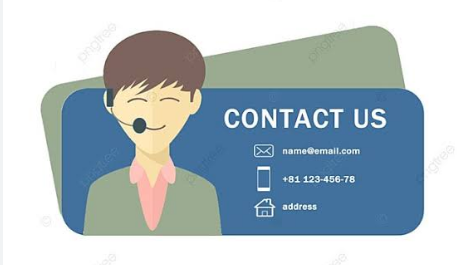

Buses
Bienvenido a tu nueva ventana para recorrer el país. En Buses por chile, creemos que el viaje en bus no es solo un medio de transporte, sino el inicio de la aventura.
Chile es una larga y angosta faja de tierra con paisajes contrastados, y la mejor forma de apreciarlos en todo su esplendor es a través de la ventana de un autobús.
¿Qué es lo que necesitas hacer?

Ver tarifas
Las tarifas de los buses en Chile se adaptan a distintas necesidades de viaje, presupuestos y niveles de comodidad. En el transporte urbano de ciudades como Santiago, las tarifas están estandarizadas para facilitar la movilidad diaria en la red pública, contando además con precios rebajados para estudiantes y adultos mayores.

Ver tours
Desde los desiertos áridos del norte hasta los glaciares de la Patagonia, la oferta turística de Chile se despliega en tres experiencias inolvidables: la Zona Norte deslumbra con sus paisajes astronómicos, géiseres y valles místicos en el Desierto de Atacama; la Zona Central combina la vibrante cultura de Santiago y las icónicas colinas de Valparaíso con reconocidas rutas del vino; mientras que la Zona Sur y Austral conquista a los amantes de la aventura con sus majestuosos lagos, volcanes, la cultura de Chiloé y los deslumbrantes circuitos naturales de las Torres del Paine y la Patagonia chilena.

Contáctanos
Si necesitas ayuda con tu pasaje, consultar itinerarios o resolver cualquier duda sobre tu viaje, dispones de varios canales de atención al cliente. Puedes comunicarte directamente a través de nuestro Call Center de atención telefónica disponible todos los días para compras y consultas urgentes, escribirnos vía WhatsApp para una atención rápida y directa, o enviar un mensaje formal a nuestro correo electrónico de soporte para solicitudes de reembolsos y cambios de pasaje. Además, puedes acercarte de manera presencial a las oficinas de ventas y boleterías ubicadas en los principales terminales de buses del país.